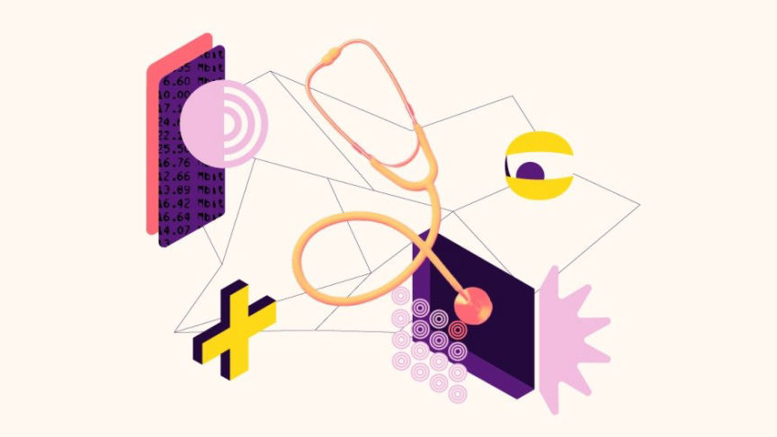
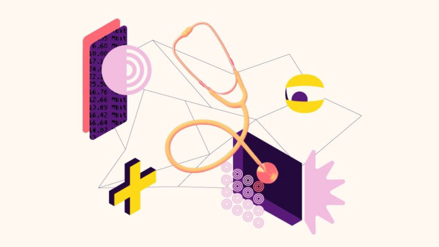

Tor is slow right now. Here is what is happening
~3 min read | Published on 2023-02-09, tagged Tor using 584 words.
The following is a recent post made on the official Tor blog. Support the cause for the fight for privacy!

For at least 7 months, several different types of ongoing denial of service (DoS) attacks have affected the Tor network. At some points, the attacks impacted the network severely enough that users could not load pages or access onion services.
We have been working hard to mitigate the impacts and defend the network from these attacks. The methods and targets of these attacks have changed over time and we are adapting as these attacks continue. It's not possible to determine with certainty who is conducting these attacks or their intentions.
We will continue to increase and tweak defenses on the Tor network to combat this problem. We are also adding two new members to our Network team who will be solely focused on .onion services development.
We know that a lot of people use and depend on Tor for security and privacy while connecting to the internet. There are many tools and pieces of infrastructure out there that depend on Tor as well. We take that responsibility and the work we do very seriously.
The Tor Project has a strong community that also understands Tor’s importance for so many people around the world, and fortunately, they have always been there to help.
Throughout our work to improve the network’s defenses, many people have stepped up to support us, fight this attack, and make sure the Tor network is stable for users. Allies have highlighted the importance of financially supporting Tor, held fundraisers to add more relays to the network, funded current relay operator associations, and come together to form the Onion Services Resource Coalition, which has allowed us to hire two new network team developers who will focus specifically on onion services. This, plus the countless supporters who have spread the word about helping Tor on social media and in their communities.
We would like to add to this post a big thank you to everyone in our community—and to our friends at Ocelot, Quiet, Wasabi Wallet / zKSNACKs, Fedimint, Trezor, OpenSats, and Freedom of the Press Foundation—who are helping us right now in all sorts of ways, we thank you.
We are 70% towards our goal of fully funding two years worth of onion service development to mitigate the impacts of these attacks. We have $155,000 left to raise.
If you believe in the importance of the Tor network and defending it against attacks, please make a donation directly towards this work:
You can contribute to the Onion Support Coalition fund by making a donation.
If you have any information that could help us understand better the nature of these attacks you can contact us via signal: https://signal.me/#p/+17787431312.
If you are a relay operator and would like to know more about what to do to defend your relay from these types of attacks you can connect with us through the email list tor-relays at lists.torproject.org. We actually recommend that all relay operators join this list to be up to date with best practices to keep the Tor network healthy.

Why Tor is slow right now and what we are doing about it.
For at least 7 months, several different types of ongoing denial of service (DoS) attacks have affected the Tor network. At some points, the attacks impacted the network severely enough that users could not load pages or access onion services.
We have been working hard to mitigate the impacts and defend the network from these attacks. The methods and targets of these attacks have changed over time and we are adapting as these attacks continue. It's not possible to determine with certainty who is conducting these attacks or their intentions.
We will continue to increase and tweak defenses on the Tor network to combat this problem. We are also adding two new members to our Network team who will be solely focused on .onion services development.
A big thank you to our community.
We know that a lot of people use and depend on Tor for security and privacy while connecting to the internet. There are many tools and pieces of infrastructure out there that depend on Tor as well. We take that responsibility and the work we do very seriously.
The Tor Project has a strong community that also understands Tor’s importance for so many people around the world, and fortunately, they have always been there to help.
Throughout our work to improve the network’s defenses, many people have stepped up to support us, fight this attack, and make sure the Tor network is stable for users. Allies have highlighted the importance of financially supporting Tor, held fundraisers to add more relays to the network, funded current relay operator associations, and come together to form the Onion Services Resource Coalition, which has allowed us to hire two new network team developers who will focus specifically on onion services. This, plus the countless supporters who have spread the word about helping Tor on social media and in their communities.
We would like to add to this post a big thank you to everyone in our community—and to our friends at Ocelot, Quiet, Wasabi Wallet / zKSNACKs, Fedimint, Trezor, OpenSats, and Freedom of the Press Foundation—who are helping us right now in all sorts of ways, we thank you.
You can help too! Here is how:
We are 70% towards our goal of fully funding two years worth of onion service development to mitigate the impacts of these attacks. We have $155,000 left to raise.
If you believe in the importance of the Tor network and defending it against attacks, please make a donation directly towards this work:
- Make a USD donation via Stripe or PayPal: add “onion services” to the comments field.
- Make a BTC donation via BTCPayServer: we’ll know your donation is to be used to advance onion services.
- Make a cryptocurrency donation directly to our wallet: let us know you’ve made a donation at giving at torproject.org
You can contribute to the Onion Support Coalition fund by making a donation.
If you have any information that could help us understand better the nature of these attacks you can contact us via signal: https://signal.me/#p/+17787431312.
If you are a relay operator and would like to know more about what to do to defend your relay from these types of attacks you can connect with us through the email list tor-relays at lists.torproject.org. We actually recommend that all relay operators join this list to be up to date with best practices to keep the Tor network healthy.